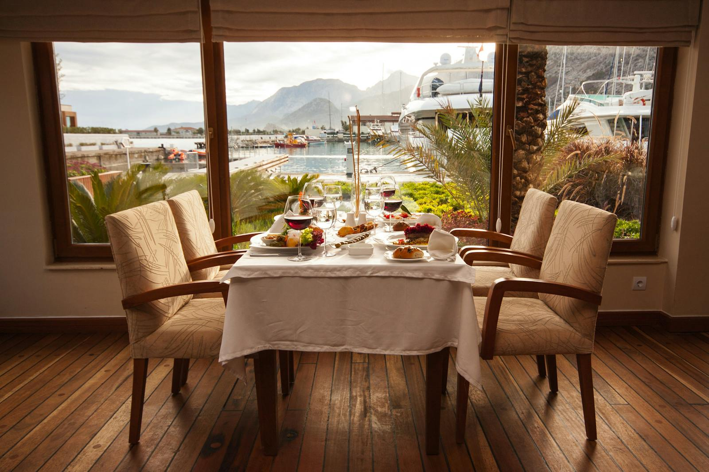

Taste of Ceylon was founded with a passion for sharing the rich culinary traditions of Sri Lanka with the world. Our journey started as a small family-owned restaurant, rooted in the belief that food brings people together. Over the years, we have grown into a beloved destination for food lovers, offering a variety of dishes crafted with fresh, locally sourced ingredients.
Our chefs are dedicated to creating flavors that represent the vibrant culture of Sri Lanka, blending traditional spices and modern cooking techniques. From fragrant rice dishes to mouth-watering curries, every plate tells a story of our heritage.